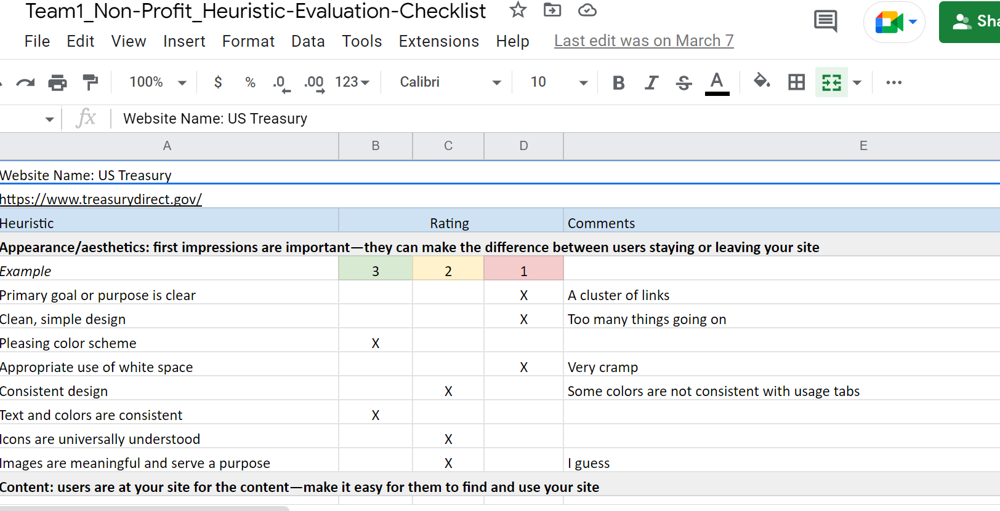
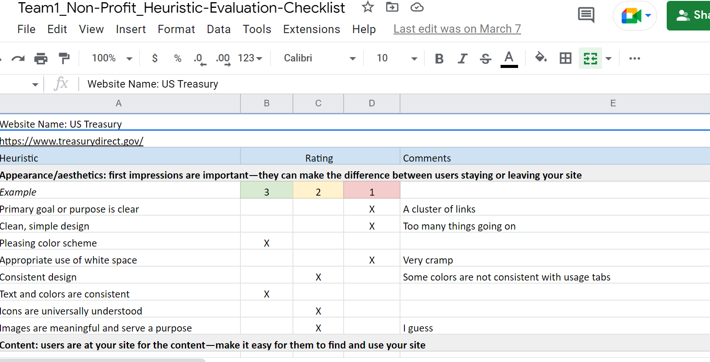
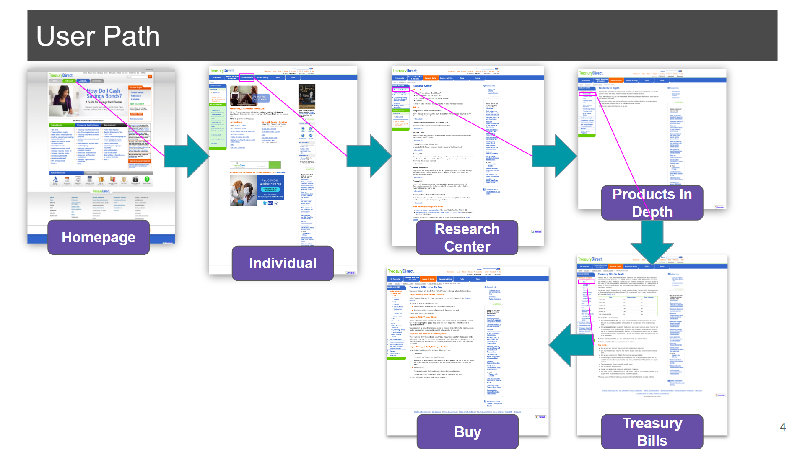
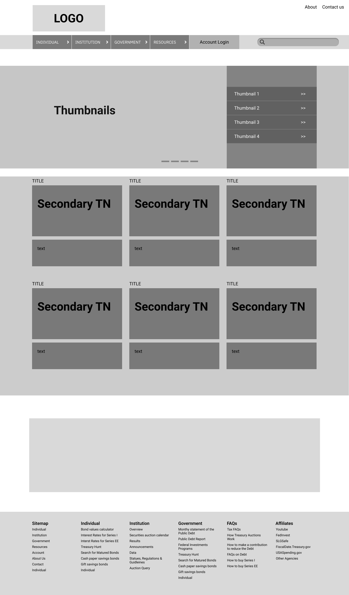

Government Website
In this project, I worked with a team of three to redesign the website Treasury Direct in hi-fidelity using Figma for both desktop and mobile.
In this project, I worked with a team of three to redesign the website Treasury Direct in hi-fidelity using Figma for both desktop and mobile.
2-weeks
Define&Ideate, Proto-Persona, Interview, User-Persona, Lo-Fidelity, Hi-Fidelity
3-people
Figma, Trello, Slack
The website Treasury Direct has a an overwhelming display for the average user, whether or not they have an understanding of the material. There is a cluster of links, titles and paragraphs, along with unnappealing visuals that may cause the user to give up quickly.
To improve the website by creating user feasability, a logical display and an appealing tone.
For this project, we began by "red-lining" and annotating the original website to target areas that needed attention. We then created a spreadsheet , or heuristic evaluation, where we prioritized issues of the current website. Through these activities, our Problem & Solution was formed. See below for snapshots of some of our red-lining, annotations and heuristic evaluation.
 

As per the design-thinking-process, we brainstormed ideas for potential users and who would fit the demographics. This would more than likely include people who are looking for assistance with financial planning situations. See below for our constructed Prototype Persona.
Instead of doing the typical interview, we did a one-on-one activity called "card sorting" with a person we thought may fit the Proto Persona description. We set up categories and cards based off the current website, and had them sort the cards into the categories so that we would have an idea of how a user would expect the website to be laid out. See below for our recordings in Figma.

We then constructed a user path when designing our prototype from navigation of the current website. See below for our user path representation.
To get started on our prototype, we started with a low-fidelity wireframe.
After creating our individual moodboards, we came together as a team and created a UI style tile containing suggested color schemes, typography, icons, photos and button appearances.